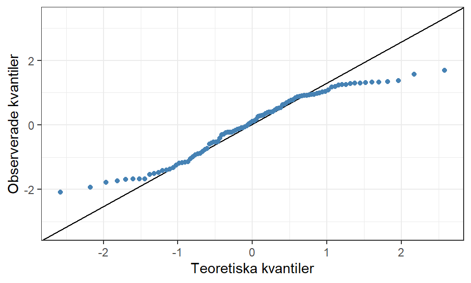
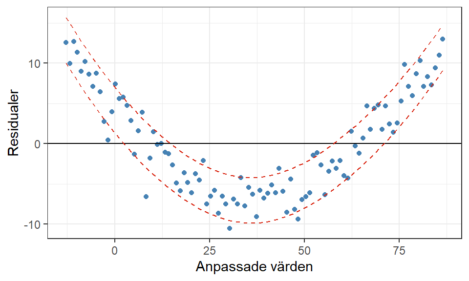

# Skapa ett datamaterial för visualiseringar
residualData <-
tibble(
residuals = residuals(simpleModel),
y = modelData$bill_length_mm,
yHat = fitted(simpleModel)
)7 Modellutvärdering
Efter att vi har anpassat en modell baserat på iakttagelser från visualiseringar och beskrivande statistik har vi möjlighet att tolka det skattade sambandet mellan de förklarande variablerna och responsvariabeln, vilket vi också gjorde i Avsnitt 6.2.1. Det finns dock två aspekter som vi ännu inte funderat på;
- vi kan inte anse att dessa tolkningar beskriver det sanna sambandet då vi ännu inte vet om modellen är lämplig,
- dessa tolkningar beskriver endast urvalet som samlats in, inte den population som vi vill dra slutsatser om.
För att kunna bedöma lämpligheten av modellen måste vi undersöka huruvida modellen uppfyller de antaganden som presenterades i Avsnitt 4.2 genom residualanalys och slutsatser om populationen kan göras med hjälp av statistisk inferens. Vi börjar alltid med att undersöka modellens lämplighet eftersom inferensmetodernas beräkningar också förutsätter att dessa antaganden är uppfyllda.
7.1 Residualanalys
Residualanalys innebär att beräkna och visuellt utforska residualerna från en modell gentemot modellantaganden \(E\overset{iid}{\sim}N(0, \sigma^2)\), det vill säga att residualerna är oberoende, normalfördelade med väntevärde 0 och lika varians. Residualerna kan också användas för att undersöka ifall den linjära modell som anpassats är lämplig. Vi kommer titta närmare på mer detaljerad residualanalys i ett senare kapitel.
För enkelhetens skull kan vi plocka ut residualerna samt de observerade och skattade värdena på responsvariabeln från den skattade modellen (se Tip 6.1).
Vi kommer visualisera dessa variabler i olika former med hjälp av ggplot2 vilket kräver att vi har en data.frame eller tibble med data.
7.1.1 Normalfördelning
Vi kan undersöka antagandet om normalfördelade residualer genom ett histogram och ett QQ-diagram (quantile-quantile diagram).
Visa kod
ggplot(residualData) +
aes(x = residuals, y = after_stat(density)) +
geom_histogram(binwidth = 1, fill = "steelblue", color = "black") +
theme_bw() +
labs(x = "Residualer", y = "Densitet")Visa kod
ggplot(residualData) +
# Använder standardiserade residualer
aes(sample = scale(residuals)) +
geom_qq_line() +
geom_qq(color = "steelblue") +
theme_bw() +
labs(x = "Teoretiska kvantiler", y = "Observerade kvantiler")
I histogrammet vill vi se normalfördelningens symmetriska och klockliknande form centrerad kring 0 vilket ibland kan vara svårt att utläsa speciellt om datamaterialet är litet. QQ-diagrammet visar de observerade och de teoretiska kvantilerna där vi vill att punkterna ska följa den inritade linjen för en “perfekt” normalfördelning.
För denna modell ser vi inga tydliga avvikelser från det mönster vi vill se, men vi kan utläsa ett fåtal avvikande observationer som skulle kunna betraktas som extremvärden. Två stora positiva residualer kan identifieras i diagrammen men det finns även enstaka negativa som ligger långt från de övriga.
Viktigt
Vi kan betrakta antagandet om normalfördelning som inte uppfyllt om dessa diagram visar på starka avvikelser från det vi vill se. Även när vi vet att ett urval är draget från en normalfördelning är det inte alltid som histogrammet visar den form som vi söker.
Visa kod
set.seed(1234)
tibble(
x = rnorm(30)
) |>
ggplot() +
aes(x = x, y = after_stat(density)) +
geom_histogram(bins = 10, fill = "steelblue", color = "black") +
theme_bw() +
labs(x = "x", y = "Densitet")
Starka avvikelser från normalfördelningen innebär exempelvis att vi ser flera områden med hög densitet:
Visa kod
set.seed(1234)
tibble(
x = runif(30)
) |>
ggplot() +
aes(x = x, y = after_stat(density)) +
geom_histogram(bins = 10, fill = "steelblue", color = "black") +
theme_bw() +
labs(x = "x", y = "Densitet")eller en väldigt skev fördelning:
Visa kod
set.seed(1234)
tibble(
x = rchisq(30, df = 2)
) |>
ggplot() +
aes(x = x, y = after_stat(density)) +
geom_histogram(bins = 10, fill = "steelblue", color = "black") +
theme_bw() +
labs(x = "x", y = "Densitet")Dessa diagram indikerar att modellen saknar en förklarande variabel eller måste transformeras på något sätt för att uppfylla antagandet.
Om QQ-diagrammet uppvisar tydliga mönster, till exempel om punkterna är krökta runt linjen, betyder det att modellen inte uppfyller antagandet om linjärt samband.

7.1.2 Lika varians
Vi kan kontrollera antagandet om residualernas lika varians genom ett spridningsdiagram med residualerna på y-axeln och någon av anpassade värden eller observerade värden på förklarande eller responsvariabeln. Vanligtvis används de anpassade värdena för att x-axeln ska beskriva hela modellen, men andra variabler kan vara användbara att visualisera för att identifiera potentiella orsaker till ett brustet antagande.
Visa kod
ggplot(residualData) +
aes(x = yHat, y = residuals) +
geom_point(color = "steelblue") +
theme_bw() +
labs(x = "Anpassade värden", y = "Residualer") +
geom_hline(
aes(yintercept = 0)
) +
# Imaginära gränser
geom_hline(
aes(yintercept = -5),
color = "#d9230f",
linetype = 2
) +
geom_hline(
aes(yintercept = 5),
color = "#d9230f",
linetype = 2
)För att uppfylla antagandet om lika varians, ska punkterna i varje tvärsnitt av värden på x-axeln vara jämnt och lika utspridda. Tänk som att vi vill placera två stycken parallella linjer längs med maximum och minimum-värden för residualerna (de två rödstreckade linjerna i Figur 7.1) och en stor majoritet av punkterna bör ligga utspridda emellan dessa. Vi ser i Figur 7.1 att några enstaka observationer faktiskt hamnar utanför och ökar variationen i vissa tvärsnitt, men då det inte är tydliga avvikelser kan vi anse att residualerna har uppfyllt antagandet om lika varians.
Viktigt
Om linjerna som täcker maximum och minimum-värden för residualerna inte är parallella uppfyller inte modellen kravet om lika varians.
Dessa fenomen betyder oftast att hela eller delar av modellen behöver transformeras för att uppfylla antagandet om lika varians.
Vi kan också identifiera problem med linjäritet i detta spridningsdiagram. Figuren nedan uppvisar någorlunda konstant varians i avseende på variationen i varje tvärsnitt av x-axeln, men det finns ett tydligt mönster i residualerna. Detta betyder att modellen inte lyckats modellera sambandet på rätt sätt. I detta läge vore det lämpligt att visualisera residualerna mot respektive förklarande variabel för att identifiera vilken/vilka utav de som verkar bidra med det icke-linjära sambandet.

7.1.3 Oberoende
Ofta är det svårt eller omöjligt att undersöka om observationerna är oberoende med avseeende på alla ordningar som data kan samlas in på. Undantaget är ifall vi vet hur datainsamlingen har gått till och om det finns någon tydlig tidsaspekt, till exempel i tidsseriedata, eller att samma enhet har uppmätts flera gånger som gör att vi vet att observationerna blir beroende. Vi vill att den modell som anpassas tar hänsyn till det beroende som finns i data så att de efterföljande residualerna endast uppvisar oberoende.
Ett linjediagram över residualerna i observationsordning kan användas för att undersöka oberoende, men det är som sagt endast i specialfall som denna visualisering används. Linjediagrammet ska uppvisa “slump”, det vill säga inga tydliga mönster i residualerna.
Visa kod
ggplot(residualData) +
aes(x = seq_len(nrow(residualData)), y = residuals) +
geom_line(color = "steelblue") +
theme_bw() +
labs(x = "Obs. index", y = "Residualer") +
geom_hline(
aes(yintercept = 0),
color = "black"
)
Andra exempel på data som har ett beroende är:
- Vi samlar in data från personer, men vissa personer kommer ifrån samma famlij, detta kan göra att det finns ett beroende mellan dessa personer.
- Vi samlar in spatiala (rumsliga) data, till exempel temperatur eller regnmängd på olika platser i Östergötland. Då är det vanligt att det finns en positiv korrelation mellan geografiskt närliggande observationer.
7.1.4 Funktion med alla diagram (diagnosticPlots)
Dessa diagram kommer vara återkommande i regressionsmodellering så vi kan skapa en funktion för att automatiskt generera alla fyra diagram samtidigt. Vi får genom paketet cowplot tillgång till en funktion (plot_grid) som kan kombinera flera diagram till en och samma.
#' Funktionen diagnosticPlots genererar enkla residualdiagram från en given modell
#' @param model En anpassad regressionsobjekt av klass "lm"
#' @param primaryColor Den huvudsakliga färgen i diagrammen
#' @param secondaryColor Den alternativa färgen i diagrammen
#' @param bins Anger antalet staplar i histogrammet
#' @param independence Logisk operator om diagram för oberoende ska inkluderas
#' @param scaleLocation Logisk operator om diagram med standardiserade residualer ska inkluderas
diagnosticPlots <-
function(
model,
primaryColor = "steelblue",
secondaryColor = "firebrick",
bins = 10,
independence = FALSE,
scaleLocation = FALSE
) {
if (model |> class() != "lm") {
stop("model must be an lm object")
}
if (bins <= 0 | (bins %% 1) > 0) {
stop("bins must be a positive integer")
}
if (!(independence %in% c(TRUE, FALSE))) {
stop("independence must be a boolean operator")
}
if (!(scaleLocation %in% c(TRUE, FALSE))) {
stop("independence must be a boolean operator")
}
residualData <-
dplyr::tibble(
residuals = residuals(model),
# Responsvariabeln finns som första kolumn i modellens model-objekt
y = model$model[,1],
yHat = fitted(model)
)
## Histogram för kontroll av normalfördelning
p1 <-
ggplot2::ggplot(residualData) +
ggplot2::aes(x = residuals, y = ggplot2::after_stat(density)) +
ggplot2::geom_histogram(bins = bins, fill = primaryColor, color = "black") +
ggplot2::theme_bw() +
ggplot2::labs(x = "Residualer", y = "Densitet")
## Spridningsdiagram för kontroll av homoskedasticitet
p2 <-
ggplot2::ggplot(residualData) +
ggplot2::aes(x = yHat, y = residuals) +
ggplot2::geom_hline(ggplot2::aes(yintercept = 0), color = "black") +
ggplot2::geom_point(color = primaryColor) +
ggplot2::theme_bw() +
ggplot2::labs(x = "Anpassade värden", y = "Residualer")
## Kvantildiagram för kontroll av normalfördelning
p3 <-
ggplot2::ggplot(residualData) +
## Använd standardiserade residualer
ggplot2::aes(sample = scale(residuals)) +
ggplot2::geom_qq_line() +
ggplot2::geom_qq(color = primaryColor) +
ggplot2::theme_bw() +
ggplot2::labs(x= "Teoretiska kvantiler", y = "Observerade kvantiler")
plotList <- list(p1, p2, p3)
if (independence) {
p4 <-
ggplot2::ggplot(residualData) +
ggplot2::aes(x = seq_len(nrow(residualData)), y = scale(residuals)) +
ggplot2::geom_hline(ggplot2::aes(yintercept = 0), color = "black") +
ggplot2::geom_line(color = primaryColor, linewidth = 1) +
ggplot2::theme_bw() +
ggplot2::labs(x= "Obs. ordning", y = "Residualer")
plotList <- append(plotList, p4)
}
if (scaleLocation) {
p5 <-
ggplot2::ggplot(residualData) +
ggplot2::aes(x = yHat, y = sqrt(abs(residuals))) +
ggplot2::geom_point(color = primaryColor) +
ggplot2::theme_bw() +
ggplot2::labs(x = "Anpassade värden", y = expression(sqrt("|Residualer|")))
plotList <- append(plotList, p5)
}
cowplot::plot_grid(
plotlist = plotList,
nrow = 2
)
}
diagnosticPlots(simpleModel)
Sammanfattningsvis visar Figur 7.2 att residualerna uppfyller antagandet om normalfördelning med väntevärde 0 och lika varians. Det finns inga tydliga mönster i något diagram som indikerar på motsatsen eller att modellen missar att plocka upp något av sambandet. Några enstaka extremvärden har identifierats, specifikt två stycken stora positiva residualer som kommer undersökas mer i senare kapitel. Slutsatsen är att modellen är en lämplig förenkling av verkligheten.
7.2 Övningsuppgifter
Använd återigen marketing från Avsnitt 5.4.
Skatta residualerna genom att beräkna skillnaden mellan de observerade och anpassade värdena på responsvariabeln.
Skapa ett histogram och ett kvantildiagram (QQ diagram) över residualerna och kontrollera antagandet om normalfördelning.
Skapa ett spridningsdiagram med residualerna på y-axeln och de anpassade värdena på x-axeln och kontroller antagandet om lika varians.
Sammanfatta dina slutatser och bedöm om modellen som anpassats i Avsnitt 6.4 uppfyller modellantaganden.